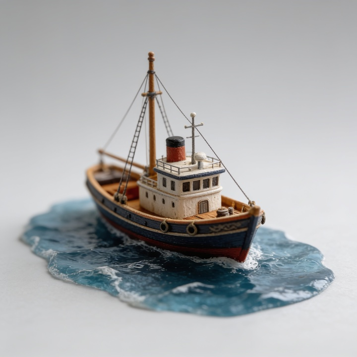
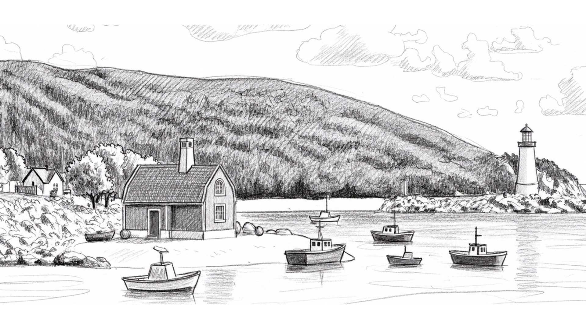
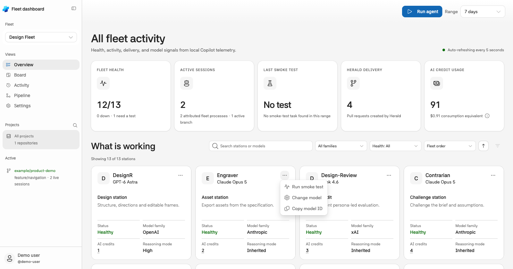

DesignR
Design station
gpt-6.1-solOpenAI · reasoning: highFleet
13agents

1 rule.
Nobody signs off their own work.
Joel Mbugua
Design Fleet · refreshed 7 September 2026
One agent — the issue was never that it is bad at the work. It is that it is alone.
A single agent writes the change, reviews the change, and declares it done — inside one context, on one model, with one notion of finished.
Every one of those is the same judgement wearing a different hat.
It reviews the code it just wrote, carrying every assumption that produced it.
Use a different model family for independent review. That reduces shared assumptions; it does not guarantee correctness.
Green tests become “verified.” Nothing ever opens the browser.
13 stations. Canonical defaults, not a claim about every installed crew.
Design station
gpt-6.1-solOpenAI · reasoning: highAsset station
claude-sonnet-5.5Anthropic · reasoning: inheritedDesign audit
grok-4.7xAI · reasoning: inheritedChallenge station
claude-sonnet-5.5Anthropic · reasoning: inheritedDocumentation station
claude-sonnet-5.5Anthropic · reasoning: inheritedSpecification station
gpt-6.1-solOpenAI · reasoning: highReporting station
gpt-6.1-solOpenAI · reasoning: mediumImplementation station
gpt-6.1-solOpenAI · reasoning: highCode review station
claude-sonnet-5.5Anthropic · reasoning: inheritedVerification station
mai-code-1.1-flashMicrosoft · reasoning: inheritedDelivery station
gpt-5.6-terraOpenAI · reasoning: inheritedIntegration station
claude-sonnet-5.5Anthropic · reasoning: inheritedWatch station
claude-haiku-5.5Anthropic · reasoning: inherited
The original code-contribution workflow within the thirteen-station fleet.
The app's Pipeline layout, with feedback routes below.
Delivery workflow; canonical model defaults.
DesignR hands work to Design-Review, then Shipwright, Surveyor, Lookout, Herald and Pull request. Engraver is an optional asset branch from DesignR into Design-Review. Pull request branches to Watchkeeper monitoring and BuildR integration; BuildR produces Preview. BuildR combines an agreed PR set; Watchkeeper runs on invocation or your schedule. Feedback routes are listed below. The full production-ready UI route, including Draftsman, appears on the shared-contract slide.
Design station
gpt-6.1-sol
Optional asset station
claude-sonnet-5.5
Independent check
grok-4.7
Only code writer
gpt-6.1-sol
Independent check
claude-sonnet-5.5
Independent check
mai-code-1.1-flash
Delivery station
gpt-5.6-terra
Outcome
Upstream delivery
Scheduled monitoring
claude-haiku-5.5
Integration operation
claude-sonnet-5.5
Outcome
Combined pull requests
Exceptions return to the station that can resolve them, without long loops.
Solid: handoffDashed: conditional
The only reason the forward ones mean anything.
A blocking finding goes back to the maker. It is not a suggestion to the station that wants to ship.
Design-Review, Contrarian, Surveyor and Lookout may block within their remit. Missing evidence is not a pass.
The maker cannot approve its own work. A disputed finding needs evidence and an independent re-check, not a quiet dismissal.
The responsible maker: Shipwright for code, DesignR for design. Reviewer tool limits help, but workflow rules are not a security sandbox.
Local telemetry, not an old benchmark presented as today’s price list.
Use observed runs to choose models. Keep paid experiments deliberate.
| Signal | What the dashboard tells you |
|---|---|
| AI credits | Agent-attributed consumption for the selected fleet, project and range. |
| Dollar equivalent | A consumption equivalent, not an invoice or a model-price ranking. |
| Responsiveness | Observed calls, completion, first-token latency and recent health. |
| Smoke tests | Explicit Run smoke test action, confirmation and credit controls. Never automatic on a model change. |
Earlier undated run totals were removed: their raw evidence is not in this repository. Watchkeeper favors frequent lightweight triage; Surveyor needs deeper independent review.
The spec determines the matrix. An old asset count is not a platform rule.
Ask one agent for “the app icon” and you get one PNG.
The engraver does not remember the sizes. It reads them from the icon page in Figma, cuts every asset in the matrix, and hands the set to design-review — which is allowed to reject it, exactly as the surveyor may reject the shipwright’s code.
It will not invent dimensions or deliver an unverified asset set.
Same rule as every other station: an asset it did not cut is named, never counted.
This slide describes the station contract, not a newly verified platform specification.
Delivery, monitoring and integration have different owners.
Files the PR and reads results back. Before/after media is side by side by default, no more than 1024px intrinsic height, and accessible to target reviewers. Herald never merges.
Runs when called or on your schedule. Fresh open PRs define scope; stored history does not. Plans work, routes by ownership, then acknowledges only successful receipts.
Uses a separate worktree and an agreed PR set. Stops on conflicts. Runs configured gates and proves the combined preview mounts. Never pushes the preview upstream.
Watchkeeper re-checks PR state before routing; closed or merged PRs leave active scope without deleting history. There is no automatic timer created by installing the fleet.
Prototype and production-ready are different delivery promises.
Contrarian challenges the brief. DesignR settles structure, explores directions or recreates UI. Draftsman supplies measured states and acceptance criteria.
Include every configured gate. Not run, blocked and unverified never mean passed. Figma proves intent; source proves wiring; the browser proves rendered behavior.
Scribe maintains docs and decisions. Envoy writes status notes or decks from verified state. Neither replaces design review, code review or browser evidence.
Project config can add UX, accessibility and Figma-authoring guidance. Missing evidence goes back to its owner. A shorter prototype route keeps its prototype label.
From health signals to the next deliberate action.

See fleet health, active work, credits and each station’s model. Filter by project or station; use Board and Activity to trace work.
Range changes refresh immediately. General settings save 5, 10, 30 or 60-second auto-refresh. Compare the signals before choosing an action.
Run agent opens a guarded launch. A station menu can Change model, Run smoke test or Copy model ID. Model saves do not launch paid tests.
Multiple providers and named fleets. Available actions respect provider capabilities and the signed-in account.
Download the fleet